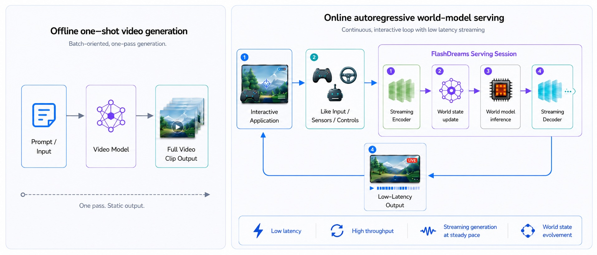

FlashDreams#
FlashDreams
A high-performance inference and serving library for interactive autoregressive video and world models, and a general platform for real-time world-model applications across gaming, autonomous vehicles, robotics, simulated or virtual environments, and more!
Why FlashDreams?#
A world model learns to generate and evolve an environment over time. In practice that usually means video, but the same idea extends to actions, state, audio, sensor input, and control signals. Serving one means keeping a session alive while input, model state, GPU inference, and output advance together, rather than producing a single static clip, which is what makes interactive simulation, robotics, autonomy, and game-like experiences possible.

FlashDreams is built for that real-time case: a closed-loop world-model demo, a driving simulator, an interactive scene rollout. Generating high-quality video is not enough on its own. The runtime has to keep an interactive session responsive while the model continues to advance the world. That comes down to four things:
Keep the interaction responsive when controls, sensors, or user input change.
Keep the GPU busy across autoregressive steps and multi-GPU execution.
Stream frames or chunks at a steady pace while the session continues.
Carry rolling state forward so the generated world evolves across steps.
Performance#
Each tile shows the steady-state per-step speedup — post-warmup, post-graph-capture — over a separate existing implementation of the same model. Both runs use the same weights on the same GPU, so the gain comes from FlashDreams’ runtime alone; each tile names its baseline below. Full methodology lives on the benchmarks page.
2.12×
Self-Forcing speedup
GB300, vs FastVideo baseline (362 ms → 171 ms per step).
3.10×
LingBot-World speedup
H100 (4×GPU), vs Official baseline (1950 ms → 629 ms per step).
1.40×
Wan2.1 speedup
GB300, vs FastVideo baseline (534 ms → 382 ms per step).
8
Integrated models
Streaming and bidirectional recipes, one CLI.
Try FlashDreams!#
The Get Started guide walks from a fresh checkout to a generated frame on a single GPU.
Supported Models#
Streaming and autoregressive recipes emit per-step output with sub-second latency once warm; bidirectional recipes are kept as full-block parity references. Each model page carries the canonical invocation, the checkpoint source, and the per-recipe knobs.
Streaming Wan 2.1 T2V via the Self-Forcing plugin. Sub-second steps after warmup on H100 / GB200.
Causal-forcing framewise T2V and I2V variants of Wan 2.1 via the Causal-Forcing plugin.
FastVideo Wan 2.2 14B causal T2V recipe.
Camera-controlled I2V with bundled prompt, first-frame, and camera arrays.
Single-view and multi-view streaming recipes against the OmniDreams checkpoints, including a diffusion-forcing AR variant.
Streaming video super-resolution for the FlashVSR checkpoint family.
Bidirectional reference model used for parity testing — T2V 1.3B / 480p and I2V 14B / 480p.
Bidirectional Cosmos-Predict2 reference recipes (T2V / I2V, 2B).